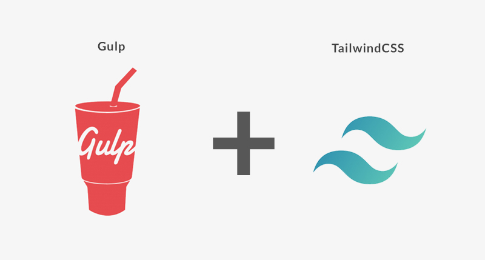

Getting started
Install once, then run the dev server. It opens on port 9050 and reloads on save.
# Install dependencies
npm install
# Start the dev server with live reload
npm run dev
# Produce an optimized production build
npm run build
Project layout
Everything you edit lives in src/. Dev output goes to dist/, production output to build/.
src/
index.html # pages (compiled with partials)
partials/ # include fragments, never emitted
css/main.css # Tailwind entry point + design tokens
js/main.js # bundled into js/main.js
js/libs/ # bundled first, before your own code
js/vendor/ # copied as-is, never bundled
img/ # optimized on production builds
Configuration
Paths, the dev-server port and the deploy target all live in config.js at the project root.
export default {
port: 9050, # dev server port
src: "./src",
dist: "./dist", # development output
build: "./build", # production output
surgeDomain: "" # set to deploy with `npm run deploy`
};
Customizing the design
Tailwind 4 is configured in CSS, not JavaScript. Add design tokens to the
@theme block in
src/css/main.css and they become utilities automatically —
--color-brand-500 gives you
bg-brand-500.